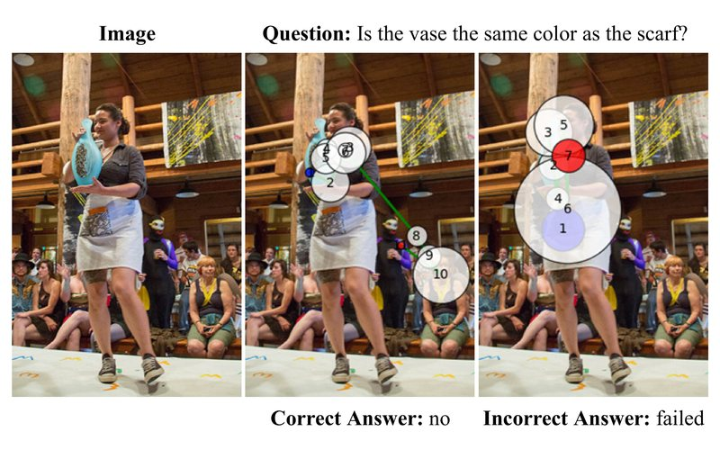
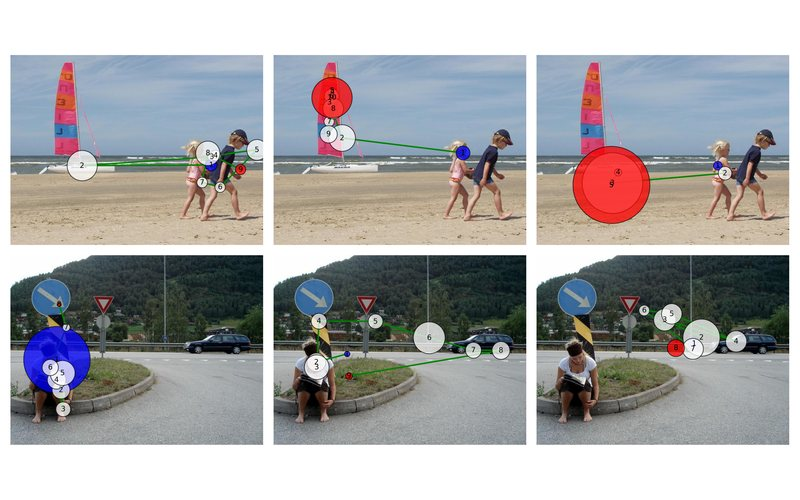
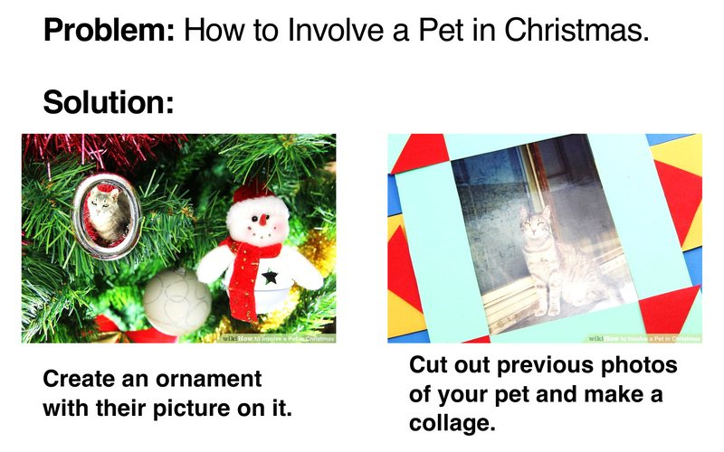
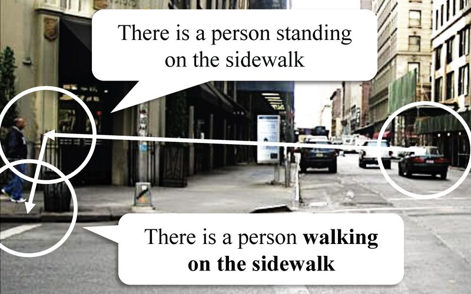

Xianyu Chen
My research makes multimodal AI reason and explain more like people, by learning from where humans look.
2026 Distinguished Dissertation Award, University of Minnesota · one of two university-wide
Research
All publicationsMy dissertation, Building Human-Like Machine Intelligence, uses human visual attention (where people look, and in what order) in three steps: model it, align AI attention with it, and explain it.
-

Modeling
CVPR 2021
Scanpaths in VQA
The first model of human scanpaths in visual question answering, trained with reinforcement learning on whole gaze sequences.
-

Modeling
CVPR 2024
Beyond Average
Predicts how each individual viewer, not the average one, scans an image.
-

Alignment
CVPR 2022 · Co-firstTPAMI 2024
VisualHow
20K+ real-life problems with illustrated step-by-step solutions; supervising model attention with human attention improves solution prediction.
-

Explainability
ECCV 2024Oral · top 2.3%
GazeXplain
Predicts where people look and describes, in words, what each fixation looks at.
Experience
Full CV (PDF)-
Oct 2025 – Present
Fasikl Inc. · Research Scientist – AI (intern 2023–2025)
Co-author of SARM (IEEE TBME 2026); co-inventor on two patent applications for closed-loop stimulation control.
-
Sep 2019 – Dec 2025
University of Minnesota · Ph.D. in Computer Science
Advisor: Prof. Catherine Qi Zhao. Doctoral research 2019–2024.
-
Summer 2019
Tencent AI Lab · Research Intern
-
Aug – Dec 2018
Shenzhen Institutes of Advanced Technology, Chinese Academy of Sciences · Research Intern
Few-shot object detection (IEEE TIP 2020, AAAI 2020).
-
Sep 2011 – Jun 2018
Sun Yat-sen University · M.E. and B.E.
Statistical signal processing for wireless and visible light communication (IEEE TSP 2017, IEEE WCL 2019).
Honors
- 2026
Distinguished Dissertation Award, University of Minnesota; University nominee for the CGS/ProQuest Distinguished Dissertation Award
- 2025, 2026
Outstanding Reviewer, WACV 2025 and CVPR 2026
- 2019, 2020
College of Science and Engineering Graduate Fellowship, University of Minnesota
- 2013, 2017
National Scholarship, Ministry of Education of China
Service · Reviewer for CVPR, ICCV, ECCV, AAAI, WACV and BMVC, and for IEEE TPAMI, TIP, TNNLS, TMM, TCSVT and ACM TOMM.
Contact
- xianyuchen1992@gmail.com
- Short bio
-
For talks and introductions
Xianyu Chen is an AI Research Scientist at Fasikl. He received his Ph.D. in Computer Science from the University of Minnesota in 2025, advised by Prof. Catherine Qi Zhao. His research uses human visual attention to build multimodal AI that reasons and explains more like people, with papers at CVPR, ECCV (Oral), IJCAI and IEEE TPAMI. His dissertation received the University of Minnesota's 2026 Distinguished Dissertation Award.